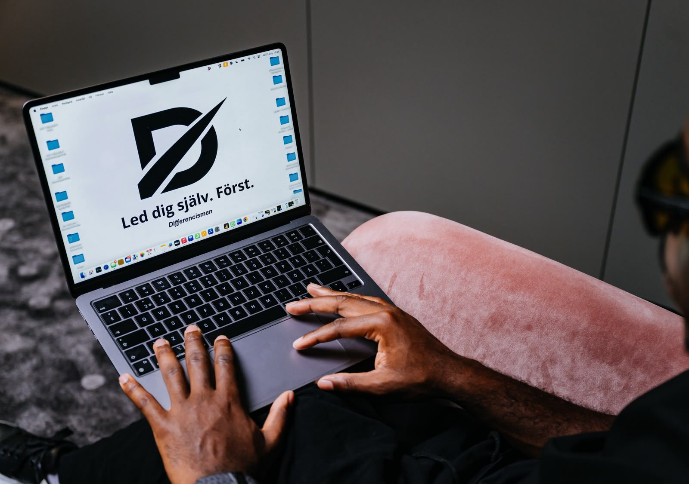

Fundamentet
Differencismen.
Filosofin och fundamentet bakom arbetet. Ett eget sätt att se, tolka och leda sig själv, byggt på fem pelare.
Differencismen är djupare än fem fina ord. Det är ett sammanhängande sätt att förhålla sig till verkligheten, pressen och sig själv.
Här visas fundamentet, inte hela metodiken. Lagar, koder, kontrollpunkter och interna verktyg lever i arbetet, inte på en hemsida. Det du ser här är riktningen. Djupet möter du i processen.

De fem pelarna
Allting utgår härifrån.
Lagkapten
Att leda sig själv först. Innan du kan påverka en miljö, ett resultat eller ett lag måste du kunna leda den ende du alltid har med dig. Lagkapten är ansvaret du tar för din egen standard, oavsett vad som händer runt omkring.
Sanning
Att se verkligheten som den är, inte som den känns. Sanning är förmågan att möta det obekväma utan att förvränga det, och att bygga vidare från det som faktiskt är, i stället för från historien du berättar för dig själv.
Perspektiv
Att vidga bilden när pressen vill krympa den. Perspektiv är att kunna zooma ut mitt i stunden, se situationen ur mer än ett håll och välja tolkning i stället för att styras av den första.
Riktning
Att veta vart du är på väg, och röra dig dit synligt. Riktning är skillnaden mellan att driva och att ledas. Den ger varje beslut en referens och gör att beteendet pekar åt samma håll, dag efter dag.
Karaktär
Att stå kvar vid din standard när det kostar. Karaktär är det som avgör vem du är när det är svårt, tråkigt eller orättvist, och det byggs i just de stunderna, inte i de enkla.
Filosofin får värde först när den blir beteende.